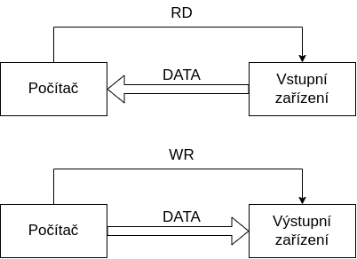
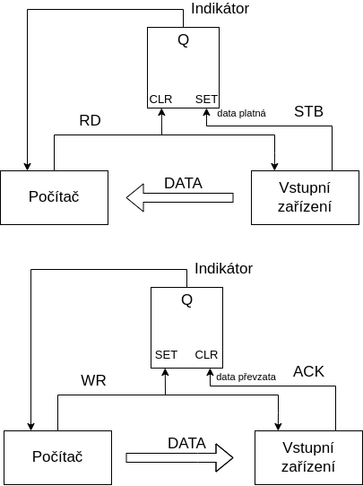
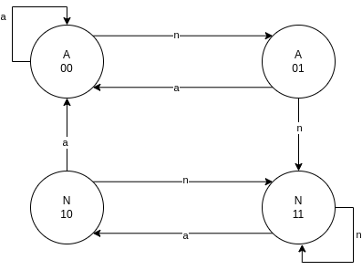

32bit: začínají E, R8D - R15D (Zápis vyresetuje horní část Rxx
!)
16bit: AX, BX … , R8W - R15W
8bit: AH (high), AL (low), BH, BL .. (Jen ABCD, jsou rozděleny na
high a low)
RSP - stack pointer
RIP - instruction pointer
Adresování, spojování JSI a
C.
Adresování:
[Bázový + Indexový * měřítko + Konstanta]
Např: mov rax, qword [ rdi + rbx * 8 ]
Datové typy:
BYTE, WORD, DWORD, QWORD (8, 16, 32, 64 bit)
Spojování:
JSI: píšeme “global” před funkce a proměnné z C
Základní
instrukce přesunu, bitové, logické, aritmetické.
Přesunu:
mov, movzx, movsx (rozšíří i se znaménkem)
CMOVcc - podmíněný přesun (cc je podmínka.. např CMOVZ )
mov KAM, CO (mov CÍL, ZDROJ)
nelze přesouvat z paměti do paměti (musí to jít přes registr)
Logické:
AND cíl, zdroj
TEST - stejně jako AND, ale neuloží výsledek
OR, XOR, NOT
Bitové:
SHL, SHR (bitový posun)
BOR, BOL (bitová rotace)
Aritmetické:
ADD, SUB, NEG, INC, DEC
CMP - stejně jako SUB, ale neuloží výsledek
MUL, IMUL, DIV, IDIV (I_ je pro znaménková čísla)
Skokové
instrukce nepodmíněné a podmíněné. Volání funkcí s parametry,
návratovými hodnotami
Skokové:
CALL - pro volání funkcí
JMP
Jcc:
pro testování bitů: JZ, JNE, JNZ..
pro porovnávání čísel:
Bezznaménkových:
A - above
B - below
Znaménkových:
L - less
G - greater
Návratová hodnota v RAX ( EAX, AX, AL)
Parametry jsou v pořadí v RDI, RSI, RDX, RCX, R8, R9
3. Komunikace s periferiemi
Z
jakých částí se skládá sběrnice a co je účelem jednotlivých částí?
Sběrnice dělíme na Adresovou, Řícicí, Datovou
Adresová
Přenáší adresy
Zdroj adresy je mikroprocesor
Počet bitů (vodičů) sběrnice odpovídá počtu bitů adresy
Řídicí
Některé signály jsou generovány mikroprocesorem, některé jinými
bloky
Nejčastější řídicí signály:
RESET
má každý mikroprocesor
uvede mikroprocesor do výchozího stavu
MEMORY READ (MR)
zabezpečuje časování čtení z paměti (nebo jiných bloků)
MEMORY WRITE (MW)
zabezpečuje časování zápisu do paměti (nebo jiných bloků)
INPUT / OUTPUT READ / WRITE
pro čtení nebo zápis do zařízení
READY
připravenost obvodu
Datová
Slouží pro přenos veškerých dat v počítači
Nedůležitější parametry jsou šířka (počet bitů) a časování
Šířka ovlivňuje rychlost komunikace
Lze ušetřit vodiče pomocí multiplexování
Co to je
adresní dekodér a kdy je potřeba jej použít?
Když je paměťový prostor obsazen více jak jednou fyzickou pamětí
nebo periferním zařízením
Rozhoduje, které zařízení je ke komunikaci určeno
Jeho výstupy jsou v podstatě Chip Select signály pro jednotlivé
obvody
Může být stavěn jako:
úplné dekódování adresy
neúplné dekódování adresy
lineární přiřazení adresy
univerzálním přiřazením adresy
Řízení komunikace
2 případy zahájení komunikace
z iniciativy programu
z iniciativy periferie
počítač se může nacházet ve stavu, kdy nemůže s periferii
komunikovat
lze řešit:
obvodově (bez vědomí počítače)
příznakovým bitem (Programové řízení)
přerušením .. počítač se později vrátí tam, kde byl vyrušen
(Systém Přerušení)
přímým přístupem (DMA)
Jaký je
princip komunikace s periferiemi pomocí V/V bran?
Vstupně / Výstupní brána (Input/Output, I/O) je obvod, který
zprostředkovává předávání dat mezi sběrnicí (počítače) a periferním
zařízení (počítače)
Dělíme na
S pamětí
Bez paměti
Základem je záchytný registr s 3 stavovým vstupem
Nepodmíněný vstup a výstup
dat:

VV_nepodmineny
Při vstupu počítač vyšle signál RD, tím přikáže vstupnímu zařízení
předat data do vstupní brány počítače
Při vstupu počítač vyšle signál WR a výstupní zařízení převezme
data
Jednoduchý způsob, předpokládá, že je perif. zařízení pořád
ready
K
čemu slouží u komunikace V/V bran indikátor a jaké přináší výhody?
Zajišťujě, že informace budou správně podány (další otázka)
Popište,
jak probíhá přenos dat pomocí V/V brány s indikátorem.
Podmíněný vstup a výstup dat

VV_podmineny
Jsou-li poskytována platná data ze vstupu, pak se za pomocí
STB(strobe) impulsu nastaví Q na 1
Když je Q na 1, data jsou předány počítači pomocí impulsu RD a po
přenosu je indikátor vynulován
V opačném případě se nastavuje Q na 1, když jsou data převzata,
pomocí ACK signálu
Jaký
je rozdíl mezi programově řízenou komunikací s perifériemi a pomocí
přerušení?
Programové:
Využívá instrukce pro vstup a výstup, ve spojení s instrukcemi pro
testování logických proměnných a skoků
Prostě testuje stavové bity ..
Přerušení:
Periferie aktivuje přerušovací signál, procesor přeruší program,
přejde do obslužného režimu, poté pokračuje v provádění hl. programu
tam, kde byl přerušen
Jaké
výhody přináší řízení komunikace s využitím přerušení?
Procesor pořád nemusí zbytečně testovat stavové bity => neztrácí
výkon
Z jakých částí se skládá
řadič DMA?
blok_DMA
Registr dat - Obsahuje slovo pro přesun
Registr adresy - Adresa hl. paměti kam bude slovo zapsány, nebo
odkud bude přečteno
Čítač přesunu - požadovaný počet slov, které mají být ještě
přesunuty
Jak probíhá přenos dat s
použitím DMA?
Naprogramování procesorem bloku DMA
blok DMA spustí periferní zařízení, a čeká než zařízení bude
připraveno data příjmou nebo vyslat
Procesor dokončí strojový cyklus a pak reaguje na žádost o DMA,
přímý přístup se provadí během činosti procesoru.. blok DMA a procesor
se střídají v používání paměti
Procesor vyšle vybrané jednotce ACK a uvolní sběrnici, jednotka pak
pošle obsah registru adresy na addr. sběrnici a obsah registru dat na
dat. sběrnici a čeká na provedení cyklu paměti.. pak obsah registru
adresy zvětší o jedničku a čítač přesunu zmenší o jedničku.. pokud není
nulový, testuje zda bylo předáno nové slovo do registru dat.. když ne,
dočasně se ukončí přesun dat a přestane se vysílat žádost o DMA.. řízení
je předáno procesoru
Procesor dále pokračuje v provádění svého programu do doby, než
obrží další žádost o DMA
Pokud je obsah čítače přesunu nulový, blok DMA ukončí cel přesun a
uvolní sběrnici
Jaké
má výhody řadič DMA proti přenosu dat s využitím CPU?
Všechno nemusí dělat procesor
I2C
Inter-Integrated Circuit
Dvou-vodičová Sběrnice
SCL => Synchronous Clock
SDA => Synchronous Data
Rozděluje připojená zařízení na:
Řídicí - Master
Zahajuje a ukončuje komunikaci
Generuje hodinový signál (SCL)
Řízené - Slave
Adresované Masterem
Adresa zařízení:
Skládá se ze 7 bitů (horní 4 určuje výrobce, dolní 3 jdou nastavit
libovolně)
Komunikace:
V klidovém stavu je SCL a SDA na 1
Start:
SCL = Sestupná Hrana
SDA = Sestupná Hrana
Konec:
SCL = Náběžná Hrana
SDA = Náběžná Hrana
Po startu následuje 7bit adresa cílového zařízení (Slave) a 1 bit
Read nebo Write z pohledu mastera
0bAAAAAAAM (A je bit adresy a M je Read/Write)
Dále slave vygeneruje ACK
Když je ACK 0, vše je Ok
Když je ACK 1, slave nereaguje
Na konci přenosu se posílá NACK
4. CISC A RISC
Kdy a proč
se začaly procesory dělit na RISC a CISC?
V 70. letech, kvůli narůstající složitosti procesorů ..
Jaké
byly zásadní důvody, proč se začaly procesory RISC vyvíjet?
Výzkumy ukázaly, že programátoři a compilátory používají instrukce
velmi nerovnoměrně (v 50% případů se vyskytují pouze 3 instrukce)
Snahy o nalezení optimálního instrukčního souboru => vznik
RISC
Jaké
jsou základní konstrukční vlastnosti procesorů RISC?
Malý instrukční soubor
V každém strojovém cyklu by měla být dokončena jedna instrukce
Zřeťezené zpracování instrukcí
Data jsou z hlavní paměti vybírána a úkládána výhradně pomocí
LOAD a STORE instrukcí
Instrukce mají pevnou délku a jednotný formát
Je použit vyšší počet registrů
Složitost se přesouvá na optimalizující kompilátory
Jak
přispěly jednotlivé charakteristické vlastnosti procesorů RISC ke
zvýšení výpočetního výkonu?
Jednotná délka instrukcí => rychlejší výběr instrukcí z paměti
=> lepší plnění fronty instrukcí
Jednotný formát => zjednodušuje dekódování
Zřetězené zpracování instrukcí
Jaký
je princip zřetězeného zpracování instrukcí v RISC procesorech?
Provedení instrukce musí vždy projít stejnými fázemi (né nutně těma
co jsou na obrázku)
Funguje jako “výrobní linka”
CISC:
T1
T2
T3
T4
T5
T6
T7
T8
T9
T10
T11
T12
VI
I1
I2
DE
I1
I2
VA
I1
I2
VO
I1
I2
PI
I1
I2
UV
I1
I2
RISC:
T1
T2
T3
T4
T5
T6
T7
T8
T9
T10
T11
T12
VI
I1
I2
I3
I4
I5
I6
I7
DE
I1
I2
I3
I4
I5
I6
I7
VA
I1
I2
I3
I4
I5
I6
I7
VO
I1
I2
I3
I4
I5
I6
I7
PI
I1
I2
I3
I4
I5
I6
I7
UV
I1
I2
I3
I4
I5
I6
I7
Legend:
short name
full name
VI
Výběr Instrukce
DE
Dekodování
VA
Výpočet Adresy
VO
Výběr Operandu
PI
Provedení Instrukce
UV
Uložení Výsledku
Jakého
zrychlení lze zřetězeným zpracováním instrukcí dosáhnout?
V ideáním světě, při délce zřetězení 6-ti instrukcí, udělá během 12
cyklů
CISC: 2 instrukce
RISC: 7 instrukcí
viz. tabulky v minulé otázce
Jaké
problémy přináší zřetězené zpracování instrukcí v procesorech RISC?
Datové a strukturální hazardy
Datové: Když instrukce potřebuje mít k dispozici data předchozí
instrukce ( a ta ještě nejsou k dispozici)
Strukturální: Problém omezených prostředků procesoru (a počítače
jako celku) .. např. jen jedna sběrnice
Problémy plněním fronty instrukcí
Podmíněné skoky
Nepodmíněné skoky na adresu, která se musí vypočítat
Co
to je predikce skoků, proč se používá a jaké způsoby predikce se
využívají?
Statická
Do instrukce se vkládají příslušné bity již při kompilaci (nebo
programátorem při psaní programu)
Dynamická
Během běhu programu se zaznamenává, jestli se skok provedl, nebo
ne
Může být:
Jedno bitová
Dvou bitová
Co
to jsou datové a strukturální hazardy v RISC procesorech? Co je
způsobuje?
uvedeno výše..
Jak
funguje dvoubitová dynamická predikce skoků a proč se využívá?
Jako čtyř stavový automat

2bitpredikce
A predikuje provedení skoku, N říká, že
skok provádět nebude
a a n přechody označují, zda se skok
naposledy prováděl
5. x86 Intel historie
8080
Není x86
8086
Prvním 16-bit
8088
Sběrnice zúžená na 8bit
Jinak stejné jak 8086
80186
Navržen pro embedded (vestavěná) zařízení
Má DMA
Vyráběn 25 let
80286
Lze přepnout do Protected modu (4 úrovně oprávnění)
Real mode (pro zpětnou kompatibilitu, RM programy nemůžou
fungovat v novém PM)
má MMU (memory management unit)
80386dx a sx
sx je downgrade dx
První 32bit
Přidán Virtual Mode (po přepnutí do PM, bylo možnost
vykonávat RM programy)
8087/287/387
Matematick koprocesor, pro práci s floaty, který byl zvlášt
80486dx (později i sx verze)
Dvojnásobný výkon při stejné frekvenci, než 386
L1 přímo v procesoru
Integrace matematického koprocesoru
Pentium
První procesor v řadě x86, kde jsou uplatněna technická řešení
typická pro RISC
L1 rozdělena na kod a data
Predikce skoků
Pentium Pro
ZÁSADNÍ technologický zlom
Pro servery (=> velký výkon(zhruba o 50% víc než pentium) a
cena)
L2 přímo na procesoru
Fetch/Decode jednotka dekoduje x86 instrukce na 118bit RISC
instrukce (které intel pojmenoval jako mikro-operace)
Instrukce jsou po dekodování uloženy do banky instrukcí (Instruction
pool), vejde se tam až 40 instrukcí
Dispatch/Execute jednotka si může vybírat instrukce mimo pořadí z
poolu (Out of order execute)
10 úrovňové zřetězení
Predikce skoků si pamatuje 512 hodnot
pentium_pro
Pentium 2
Vychází z Pentia Pro
Pentium 3
Optimalizace z hlediska spotřeby
Dobré pro přenosné počítače
Pentium 4
Mikroarchitektura NetBurst
Při stejné frekvenci jako P3 měl stejný výkon+-, ale více se
zahříval
20 úrovňové zřetězení
Pentium EM64T
Extended Memory 64 Technology (Později jen Intel64)
První 64bit procesor
30 úrovňové zřetězení
Velice se přehřívaly
Pentium M
Určeny pro přenosné počítače
Výkonný procesor s nízkou spotřebou energie
Obdobný výkon jako P4 při nižší frekvenci a třetinové spotřebě
Core
Core 2
Atom
Následovník, obrázek ???
6. Paměti
Dle
jakých kritérií či vlastností se dělí paměti počítačů?
Typu přístupu
RAM (Random access memory) - libovolný přístup
SAM (Serial acess memory) - Seriový přístup
Speciální (paměť typu zásobník, fronta..)
Možnosti zápisu/čtení
RWM (Read write memory) - pro zápis a čtení
ROM (Read only memory) - pouze pro čtení
Kombinované
NVRAM (Non volatile RAM)
WOM (Write only memory)
WORM (Write once - ready many times memory) - optické disky
Principu elementární buňky
SRAM - statické paměti
DRAM - dynamické paměti
PROM, EPROM, EEPROM, FLASH - programovatelné paměti
Uchování informace po odpojení napájení
Non-Volatile - Zachovají si informaci i po odpojení napájení
Volatile - Ztráci informaci po odpojení napájení (DRAM a SRAM)
Jak
je v dynamických pamětech ukládána informace a jak je udržována?
Ve formě náboje v kondenzátoru
Zapomenou svá data cca po 10ms
Proto je nutné obnovovat napětí kondenzárorů - Refresh
Jaká je vnitřní
organizace dynamických pamětí?
Ve čtvercové matici v jedné, nebo více vrstvách
Výběr buňky tak musí být proveden pomocí row a column dekodéru
DRAM čte adresu po dvou částech (adresa řádku a sloupce) do
adresového bufferu